3 · Un peu d'histoire
Des pirates aux festivals
- XIIIe siècle
- Le roi Jacques Ier a conquis la région.
- XVIe siècle
- On a construit la tour de Sant Vicent contre les pirates.
- XVIIe siècle
- Des moines carmes se sont installés dans la montagne.
- Vers 1900
- Des familles riches ont construit des villas d'été.
- 1995
- Le premier festival international, le FIB, a eu lieu.


4 · Des lieux à découvrir
Trois endroits à ne pas manquer
Mes restaurants préférés
-
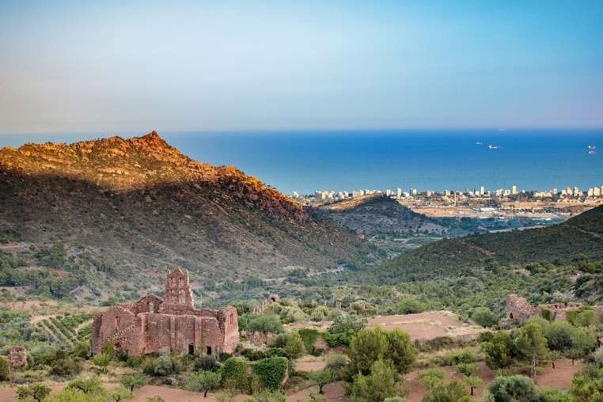
Le Desert de les Palmes
un parc naturel et un monastère
-

La Vía Verde
une ancienne voie ferrée au bord de la mer
-

Aquarama
un parc aquatique avec des toboggans
-

La Terraza Voramar
face à la mer, à l'hôtel Voramar
-
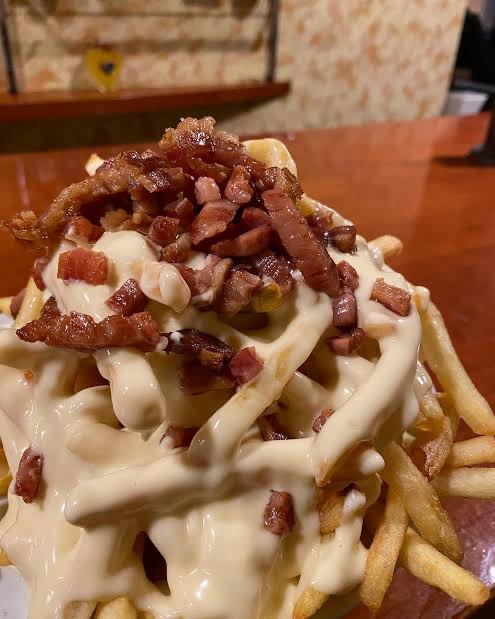
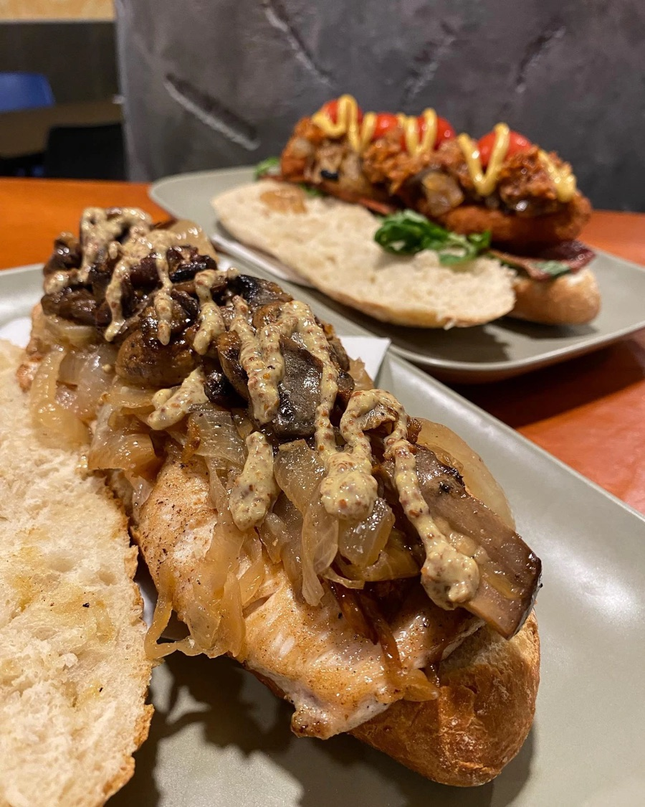
Nou Cafè
d'énormes bocadillos
-

Vin Up
des montaditos au comptoir
-

Marabrasa
du poisson à la braise
-
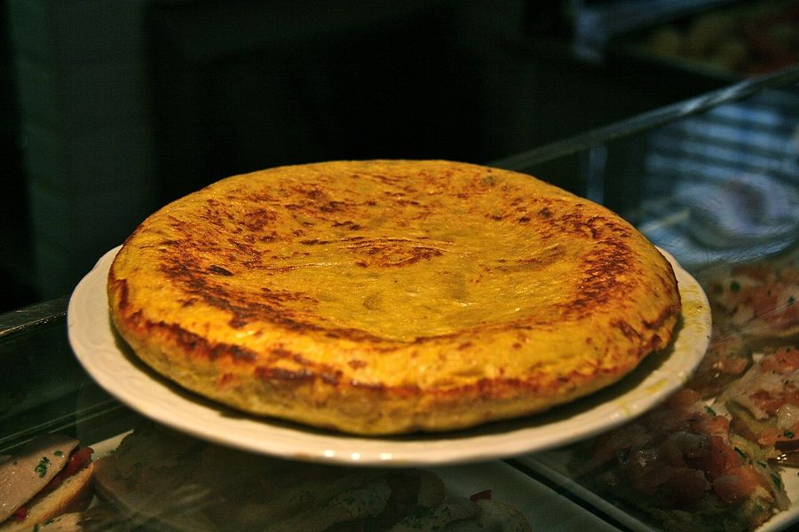
Doma
tortilla, croquettes et tapas
-
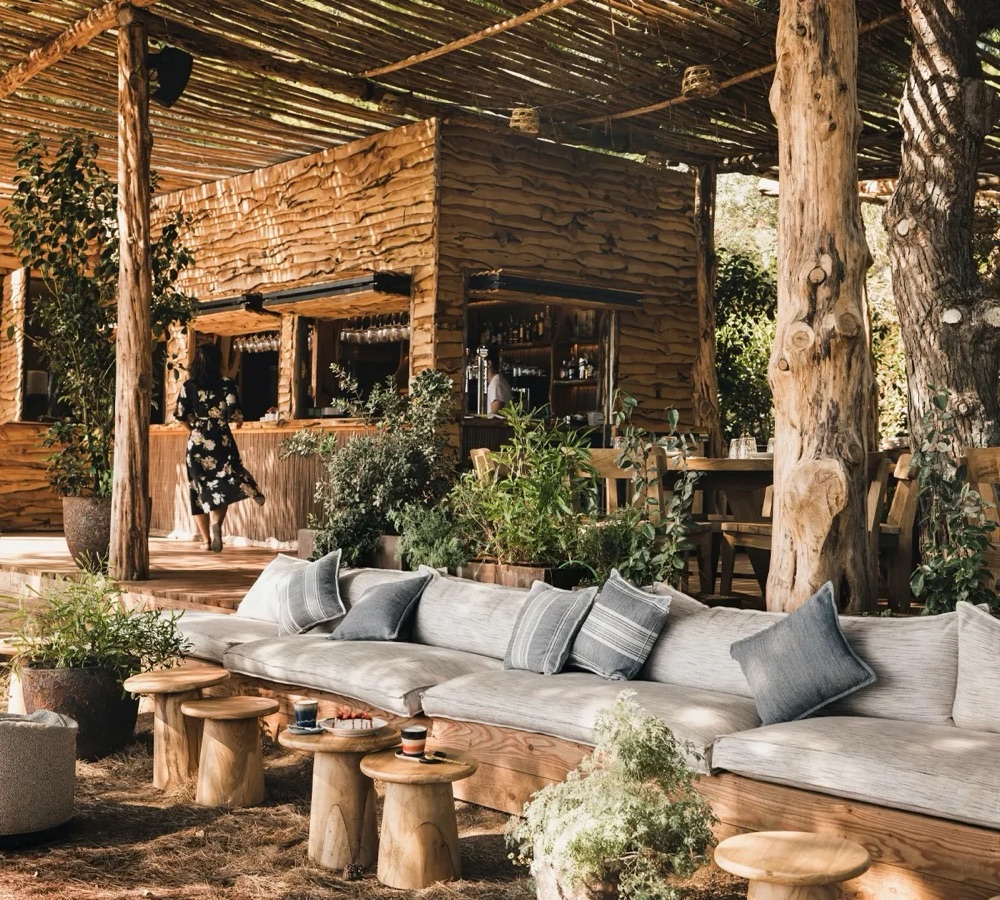
Masía Bellver
une masia et des viandes grillées
-
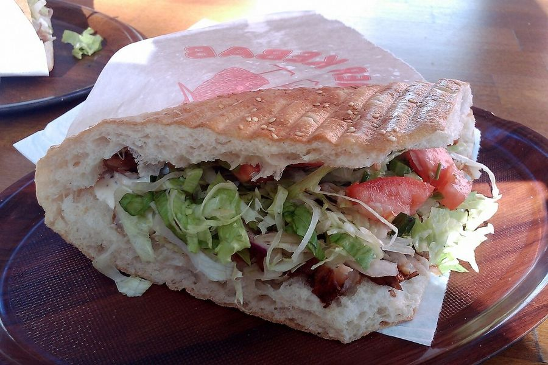
Taj Mahal
le kebab
Mon vrai QG pendant des années
6 · La fête
Et la fête… c'est quel jour ?
- lundisi on veut
- mardi
- mercrediaussi
- jeudiet même le jeudi !
- vendredi
- samedi
- dimancheaussi un bon jour
Toute la semaine !


-
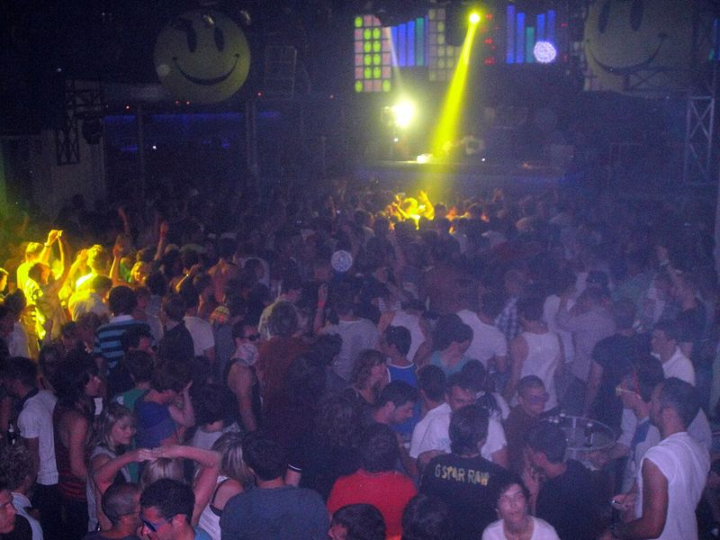
La Santadiscothèque -
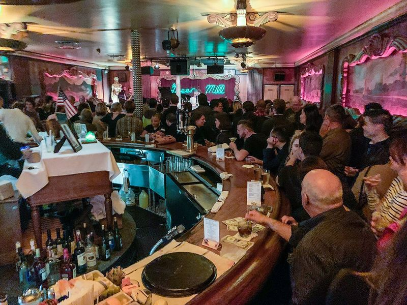
Fuit Fuiopub -
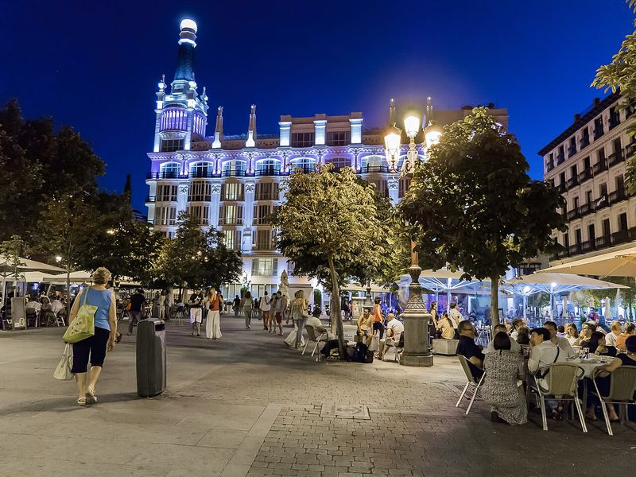
Le Selectbar, sur la place des Dolors -

Tropical Surf Barbar à cocktails -
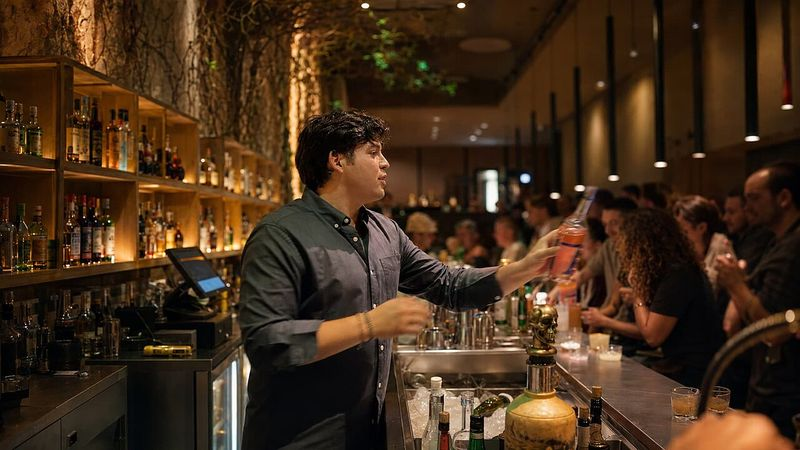
La Llunalounge, avec un patio -
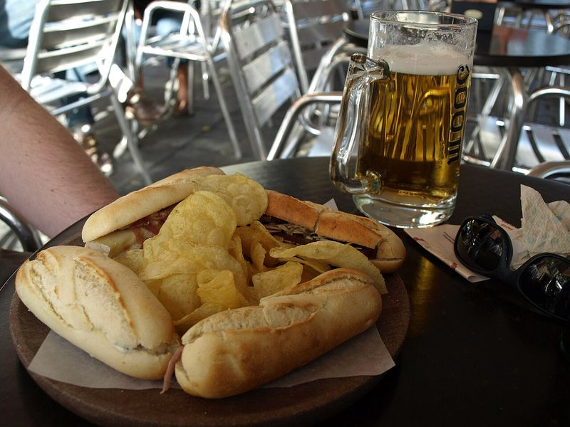
El Corbbar, place de la Gare -
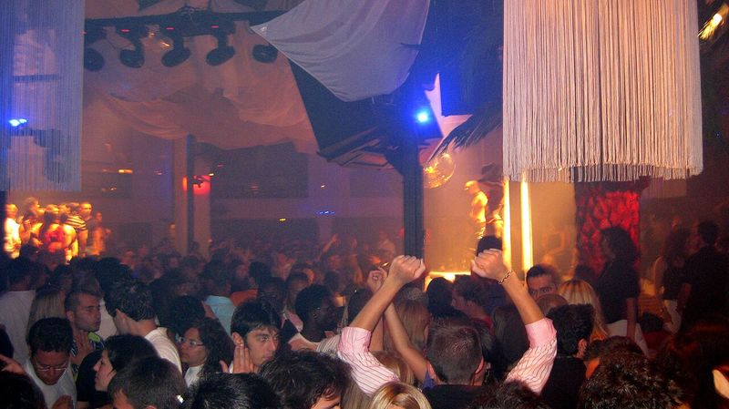
Casablancadiscothèque
6 · La fête
Discothèques et pubs
Photos d'illustration
6 · La fête
La ville des festivals
-

À Pâques
le SanSan, pop et indie
-

Mi-juillet
le FIB, pop, rock et électro depuis 1995
-
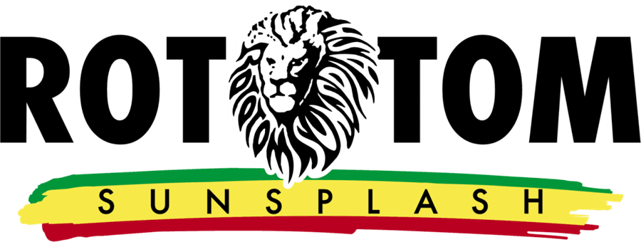
En août
le Rototom, le plus grand festival de reggae d'Europe
Et aussi : le Benicàssim Blues Festival, fin mai ou début juin.

8 · Mon bon plan
La Vía Verde à vélo, au coucher du soleil
- 5,7 km entre Benicàssim et Oropesa
- des tunnels et des falaises
- des criques pour se baigner
- des villas et des restaurants

Merci !
Des questions ?
Images : Google Earth · Photos : Wikimedia Commons
Benicàssim
Présenter sa ville · oral de FLE
←→espaceavancer Nnotes Pprésentateur Tchrono Bécran noir Fplein écran Iinfo
Vols : Google Earth Studio (Data SIO, NOAA, U.S. Navy, Landsat / Copernicus, Airbus). Limites : IGN via geoBoundaries et OpenStreetMap. Photos : Wikimedia Commons, avec auteur et licence sur la dernière diapositive.